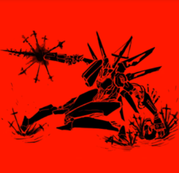

ULTRAKILL is a game developed by Hakita, and is published by the studio New Blood Interactive. The game is a member of the Boomer Shooter genre, similar to games like Doom Eternal and Dusk (Which is also developed by New Blood!).
Inside the game you play as V1, one of the machines who enters HELL for the sole purpose of living through the absorption of BLOOD. Throughout the game, you enter the various layers of HELL to face countless enemies and challenges to sustain your literal BLOODTHIRST using your variety of guns and arm types that you gain throughout your journey.
There are an immense variety of weapons to choose from, from a pistol that throws coins to shoot for extra damage, to a
Gameplay example of the style meter, enemies, and weapons, as well as some other mechanics in ULTRAKILL
ULTRAKILL is a game developed by Hakita, and is published by the studio New Blood Interactive. The game is a member of the Boomer Shooter genre, similar to games like Doom Eternal and Dusk (Which is also developed by New Blood!).
Inside the game you play as V1, one of the machines who enters HELL for the sole purpose of living through the absorption of BLOOD. Throughout the game, you enter the various layers of HELL to face countless enemies and challenges to sustain your literal BLOODTHIRST using your variety of guns and arm types that you gain throughout your journey.
There are an immense variety of weapons to choose from, from a pistol that throws coins to shoot for extra damage, to a
Gameplay example of the style meter, enemies, and weapons, as well as some other mechanics in ULTRAKILL

Illustration of V1 on the OST playlist of the game
List of the various enemies that you'll face in HELL
rocket launcher that shoots cannonballs. Arms come in three types (as of now), which can swap between a blue arm to parry hell energy projectiles, a red arm that is essentially a shotgun, and a green arm that acts as a grappling hook. Enemies you face come in varying types as well, such as the husks and demons of hell, the angels to keep them in place, and even fellow machines that have the same goal as you.
by Filiberto Nieves IV
 eople have long been forgotten since the GREAT WAR. Deaths occurred in the billions and the world was ripped apart by mankind's thirst for conquest. And with it came innovations, never for the good of mankind, only for the good of the nation. MACHINES, used not only for protection, but for destruction more deadly and efficient than the one before it.
Nonetheless, all powered by the same resource that mankind shed for decades: BLOOD. Until eventually, humans began to realize what they had done, seeing what they destroyed.
BODIES littered the Earth, the air was grey with a smog of ash and oil, and the sun could no longer reach god's creation. Even so, they attempted to rebuild using a new energy source from what they thought was a cave. The gates to god's most unholy creation were opened that day. Humanity then suffered the wrath of their deeds, being swallowed by HELL. With Humanity gone, machines had nowhere to go but the depths. MANKIND IS DEAD. BLOOD IS FUEL. AND HELL IS FULL.
eople have long been forgotten since the GREAT WAR. Deaths occurred in the billions and the world was ripped apart by mankind's thirst for conquest. And with it came innovations, never for the good of mankind, only for the good of the nation. MACHINES, used not only for protection, but for destruction more deadly and efficient than the one before it.
Nonetheless, all powered by the same resource that mankind shed for decades: BLOOD. Until eventually, humans began to realize what they had done, seeing what they destroyed.
BODIES littered the Earth, the air was grey with a smog of ash and oil, and the sun could no longer reach god's creation. Even so, they attempted to rebuild using a new energy source from what they thought was a cave. The gates to god's most unholy creation were opened that day. Humanity then suffered the wrath of their deeds, being swallowed by HELL. With Humanity gone, machines had nowhere to go but the depths. MANKIND IS DEAD. BLOOD IS FUEL. AND HELL IS FULL.